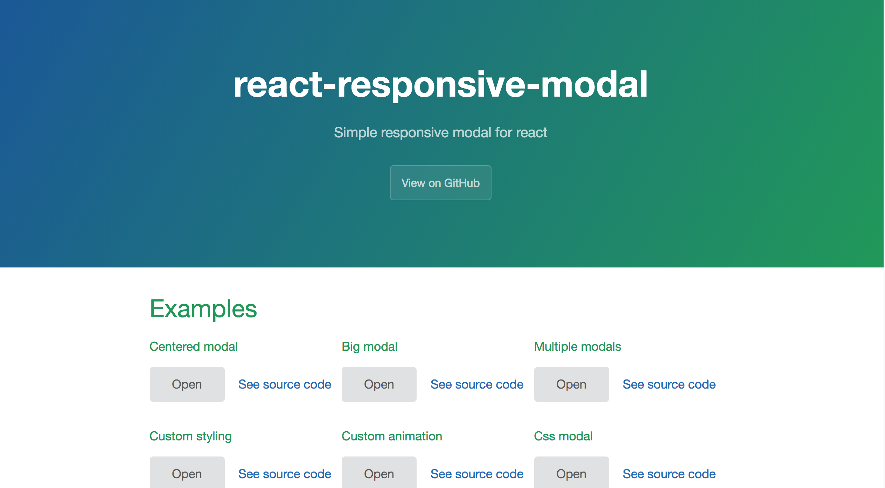

react-responsive-modal
基于React的自适应弹出框


react-responsive-modal


A simple responsive react modal compatible with React 15 and 16.
- Centered modals.
- Scrolling modals.
- Multiple modals.
- Easily customizable via props.
Demo
You can find a demo here.
Examples
https://react-responsive-modal.leopradel.com/#example
Installation
With npm: npm install react-responsive-modal --save
Or with yarn: yarn add react-responsive-modal
Usage

import React from 'react';
import ReactDOM from 'react-dom';
import Modal from 'react-responsive-modal';
export default class App extends React.Component {
state = {
open: false,
};
onOpenModal = () => {
this.setState({ open: true });
};
onCloseModal = () => {
this.setState({ open: false });
};
render() {
const { open } = this.state;
return (
<div>
<button onClick={this.onOpenModal}>Open modal</button>
<Modal open={open} onClose={this.onCloseModal} little>
<h2>Simple centered modal</h2>
</Modal>
</div>
);
}
}
ReactDOM.render(<App />, document.getElementById('app'));
Usage with css
By default react-responsive-modal is using react-jss.
If you don't want to add it to your project you can use the css version of this project:
// Import the css file
import 'react-responsive-modal/lib/react-responsive-modal.css';
import Modal from 'react-responsive-modal/lib/css';
Props
| Property | Type | Default | Description |
|---|---|---|---|
| open* | Boolean | Control if the modal is open or not. | |
| onClose* | Function | Fired when the Modal is requested to be closed by a click on the overlay or when user press esc key. | |
| children | Node | The content of the modal. | |
| closeOnEsc | Boolean | true | Is the modal closable when user press esc key. |
| closeOnOverlayClick | Boolean | true | Is the modal closable when user click on overlay. |
| little | Boolean | false | Is the dialog centered (when you don't have a lot of content). |
| showCloseIcon | Boolean | true | Show the close icon. |
| closeIconSize | Number | 28 | Close icon size. |
| closeIconSvgPath | Node | A valid svg path to show as icon. | |
| classNames | Object | {} | An object containing classNames to style the modal, can have properties 'overlay' (classname for overlay div), 'modal' (classname for modal content div), 'closeIcon' (classname for close icon svg). You can customize the transition with 'transitionEnter', 'transitionEnterActive', 'transitionExit', 'transitionExitActive' |
| styles | Object | {} | An object containing the styles objects to style the modal, can have properties 'overlay', 'modal', 'closeIcon'. |
| animationDuration | Number | 500 | Animation duration in milliseconds. |
License
MIT © Léo Pradel